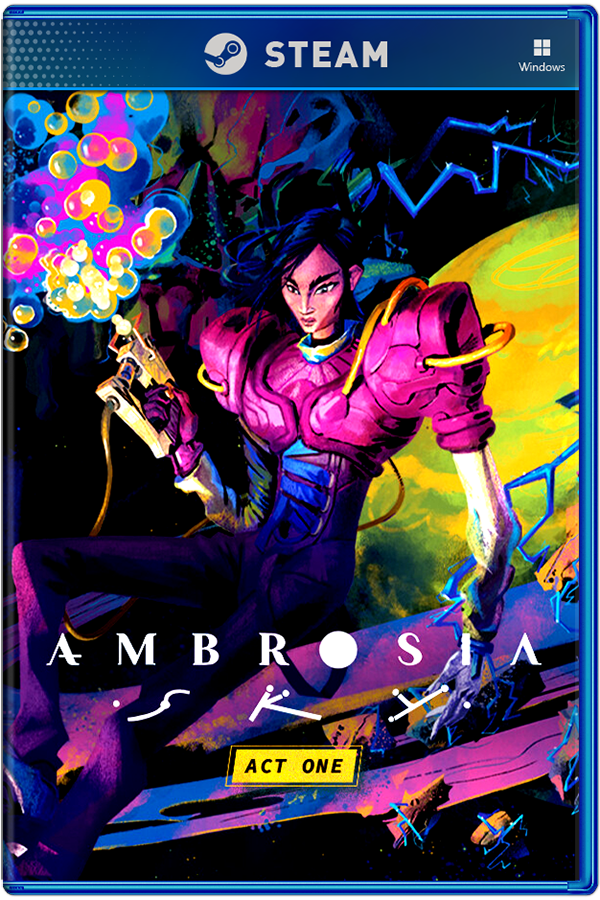

Ambrosia Sky: Act One
Every archived year-end list appearance, including placement and points earned.
About the Game
Ambrosia Sky: Act One is a first-person immersive sim where the only thing standing between you and the answers you seek are treacherous zero-G anomalies, deadly alien fungus with their own unique abilities, and the creeping guilt that maybe if you hadn’t abandoned this place all those years ago, everyone you used to know might still be alive. Act One is available to purchase now. Ambrosia Sky: Act One will be your sombre homecoming to a colony that is overrun with a vibrant, alien ecosystem. Adapt and survive encounters with various forms of hostile fungi that will burn, electrocute, and overwhelm you. Harvest their fruit to craft powerful new chemical agents to fight back or open new avenues of exploration. And pick through the desiccated remains of a once populous colony as you journey into strange depths to unravel the dark mystery that left its inhabitants dead, missing, or maybe even complicit.Ambrosia Sky’s unique gameplay blends rewarding exploration with meditative cleaning. Use your chemical sprayer to cleanse unique strains of deadly fungi, each one trying to burn, electrocute, or trap you. Study their behaviours and harvest their fruiting bodies to craft powerful upgrades, like electrical foam you can use to reroute power to power doors or consoles.The stylized world of Ambrosia Sky is a living ecosystem with both the hostile fungus and the remnants of those who once lived there. Explore a series of environments across a range of mission types, using your tether to traverse unstable gravity fields or reach hidden passages to uncover the mystery of the Cluster.Your mission isn’t purely personal. As part of an enigmatic order of scientists in pursuit of human immortality, you are also tasked with finding victims of the contamination whose DNA can be studied. Find these chosen deceased, perform a sacred ritual to further your research and understand the disaster through the lives of the people destroyed by it.AMBROSIA SKY'S ACT STRUCTUREAmbrosia Sky: Act One begins Dalia’s story and introduces the world of the Cluster, encompassing different mission types, hostile fungus varieties, collectibles, the ability to 100% clean all fungus upon location revisitation, and a variety of upgrades to your chemical sprayer and tether. Ambrosia Sky: Act One is roughly 5 hours of gameplay, but more hours if you revisit each location to 100% clean them and hunt for all of the collectibles.Act Two and Three will contain a similar amount of content to Act One, will continue Dalia’s story, and will carry your progression forward. Acts Two and Three are separate releases, tentatively scheduled to launch in 2026.ABOUT THE DEVELOPMENT TEAMSoft Rains is a Toronto, Canada-based game studio focused on delivering world-class development experience in our work, from world-building and memorable storytelling to immersive gameplay and art.
| Released | 2025-11-10 |
|---|---|
| Developer | Soft Rains |
| Publisher | Soft Rains |
| Genres | Action, Adventure, Simulation |
| Platforms | PC |
SingleplayerFull controller supportAtmosphericStory RichFirst-PersonSci-fiExplorationFemale ProtagonistAction-AdventureSpacePhysicsFuturistic
Where to Buy
Game information provided by RAWG.
Points by Year
List History
| Year | Source | List | Placement | Points |
|---|---|---|---|---|
| 2025 | GameSpot | The Best Games Of 2025 | Unranked | 1 |